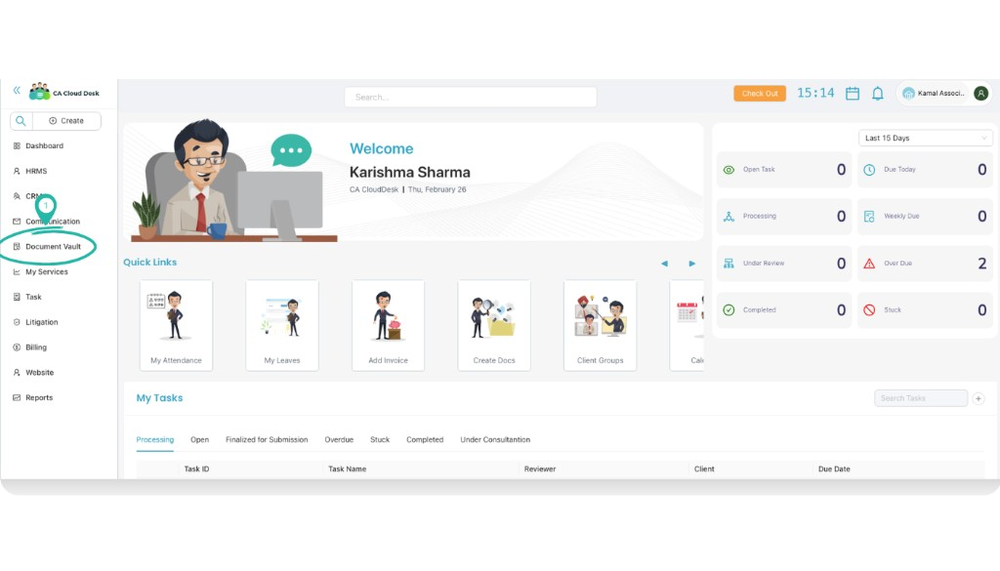
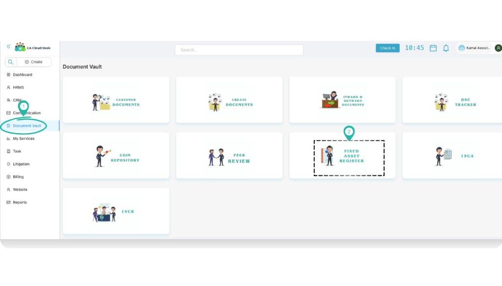
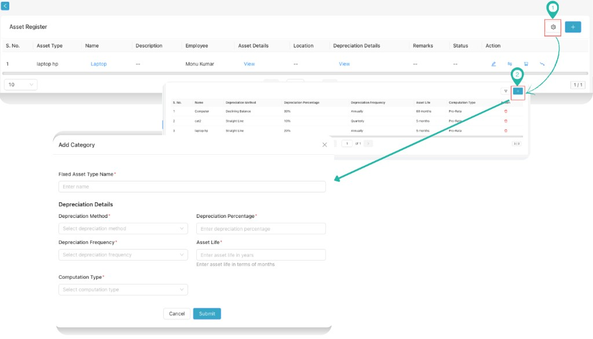
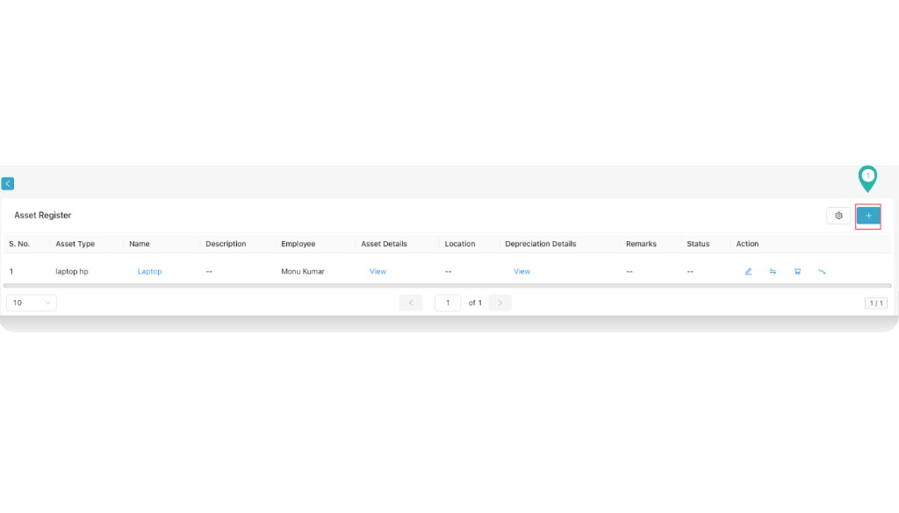
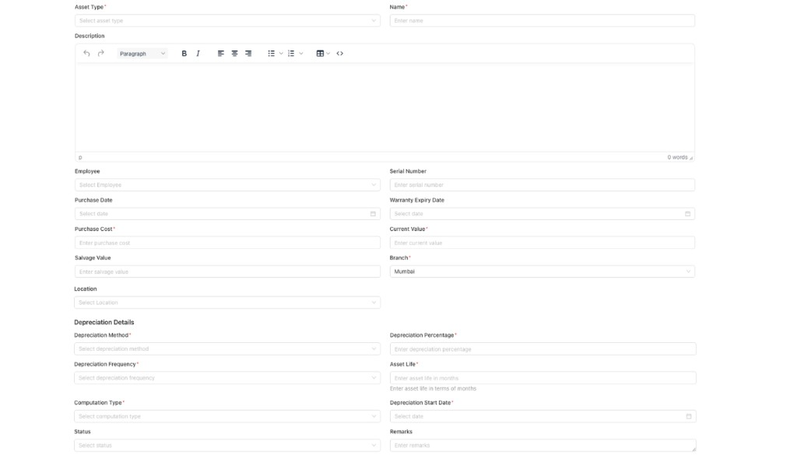

Fixed Asset Register (Document Vault)
Use Fixed Asset Register in Document Vault to keep a clean record of your firm’s assets (like laptops, furniture, etc.) with purchase details and depreciation details in one place.
Overview
The Fixed Asset Register is used to register assets, assign them to an employee (if needed), and store depreciation inputs such as method, percentage, frequency, life, and start date.
Login and Open Fixed Asset Register
- Login to CA Cloud Desk Partnerdesk.
- From the left panel, click Document Vault.
- From the available options, click Fixed Asset Register.

Step 1 — From dashboard, click Document Vault.

Step 2 — On Document Vault, select Fixed Asset Register.
Add Asset Category (optional)
Categories help your team keep asset types consistent (for example: Laptop, Printer, Furniture, etc.). Add a category once, then reuse it for every asset.
- On the Fixed Asset Register page, click the Settings (gear) icon.
- Click the + icon to add a new category.
- Enter the Fixed Asset Type Name and required depreciation defaults (if asked), then click Submit.

Add Category — use Settings → + and submit the new category.
Register an Asset
- Click the + icon to create a new asset entry.
- Fill the asset details (basic, employee/branch/location, depreciation).
- Click Submit to register the asset.

Register Asset — click the + icon to open the form.

Register Asset — fill all details and click Submit.
Field Guide (what to fill)
ABasic asset details
- Asset Type: Select asset type/category (example: Laptop).
- Name: Asset name (example: Laptop HP).
- Description: Optional notes/specifications.
- Employee: Select employee (if asset is assigned).
- Serial Number: Asset serial number (if available).
BPurchase & valuation
- Purchase Date
- Warranty Expiry Date
- Purchase Cost
- Current Value
- Salvage Value
CBranch & location
- Branch: Select the branch where asset belongs.
- Location: Select the location (for example: Office/Room/City).
- Status: Select status (Active/Inactive as per your setup).
- Remarks: Any internal remarks.
DDepreciation details
- Depreciation Method: Select depreciation method.
- Depreciation Percentage: Enter percentage.
- Depreciation Frequency: Select frequency (Monthly/Quarterly/Yearly as available).
- Asset Life: Enter asset life in terms of months.
- Computation Type: Select computation type.
- Depreciation Start Date: Select start date.
Tips
- Use consistent categories (Laptop / Printer / Furniture) so reporting stays clean.
- Keep Serial Number filled when available—helps in audits and physical verification.
- Assign Employee only when the asset is actually issued to someone.
- Depreciation inputs should match your firm’s accounting policy (method, rate, life).